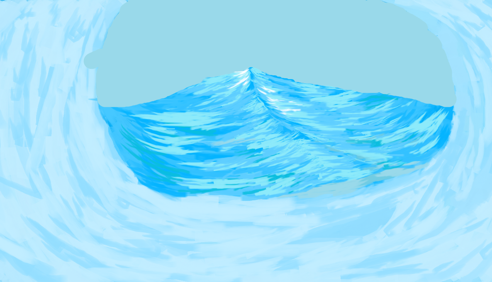
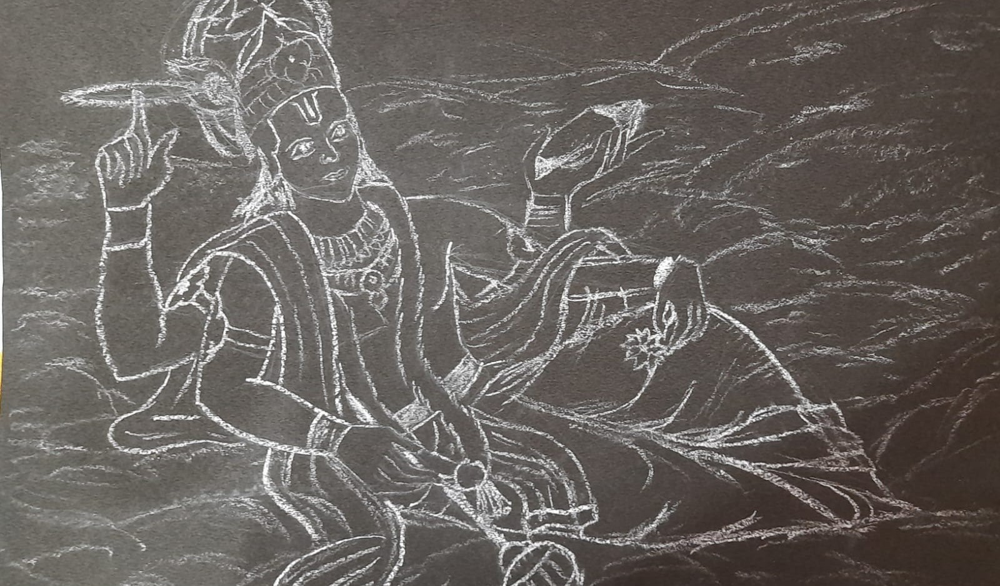

Content Writing
Writing has always been my forte. Ever since I was a kid I loved writing long stuff. Thought I would use it for something productive and thus started using my skills to write content for an online learning platform, Geeks for Geeks.

Blogging
I have been a big geek of mathematics. Always eager to go into the depths and explore the concept from various angles. I started this blog to practice and test my own knowledge. The sole purpose was to present to people the concept in easiest way possible.

Digital Art
It hasn't been long since I have been doing it. I was always a talented artist. When NFTs were the trend in news, I thought of making my own digital arts for some money, but later it became a source of pure enjoyment. In the above image you see my first art I made on MS Paint.

Sketching
I love sketching figures. It gives me sense of control. My favourite type is making sketches of either Gods, or village sceneries. Making a sketch with chalk is something new that I have been trying for last couple of years, and I am loving it.